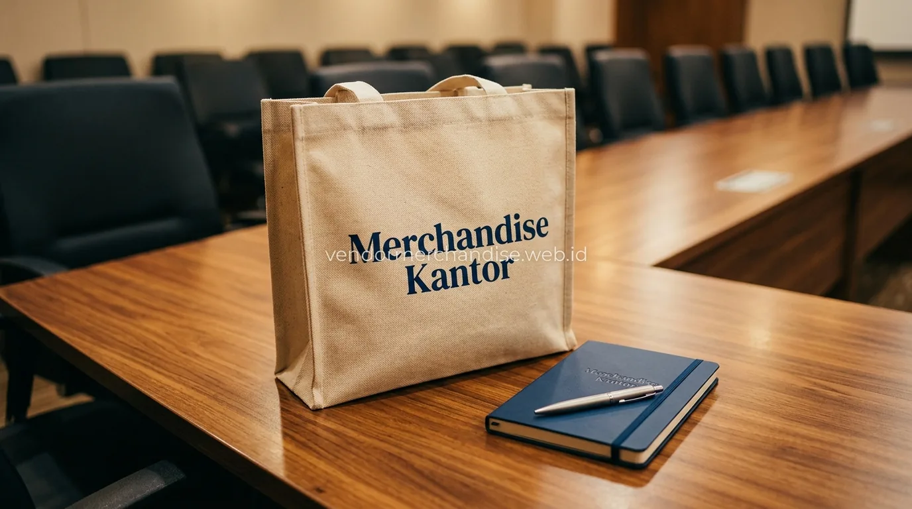

Mengapa Tas Menjadi Merchandise yang Sering Dipilih untuk Berbagai Acara?
Tas menjadi merchandise yang sering dipilih untuk berbagai acara karena fungsinya yang praktis sebagai wadah membawa barang, sehingga penerima cenderung menggunakan tas tersebut secara berulang, baik selama acara berlangsung maupun setelah acara selesai.
Ukuran permukaan tas yang relatif luas juga memberi ruang cetak logo yang lebih besar dibanding merchandise lain, sehingga identitas visual perusahaan dapat ditampilkan dengan lebih jelas dan mudah dikenali audiens.
Tas untuk Kebutuhan Seminar dan Conference Kit
Tas custom logo sering digunakan sebagai wadah utama dalam paket seminar kit atau conference kit, karena peserta membutuhkan tempat untuk membawa modul acara, notebook, dan merchandise tambahan lain selama mengikuti rangkaian acara.

Model tote bag umumnya menjadi pilihan utama untuk kebutuhan ini karena ringan, mudah dibawa, dan tetap terlihat rapi meski digunakan sepanjang hari selama acara berlangsung.
Tas untuk Event dan Campaign Marketing
Tas custom logo turut digunakan sebagai bagian dari strategi event dan campaign marketing perusahaan, baik sebagai hadiah dalam campaign giveaway, merchandise booth pameran, maupun souvenir pada acara launching produk.
Beberapa kebutuhan event dan campaign yang umum menggunakan tas sebagai merchandise:
- Hadiah pada campaign giveaway di media sosial
- Souvenir booth pada acara pameran atau exhibition
- Merchandise untuk tamu undangan pada acara launching produk
- Paket goodie bag pada berbagai jenis event korporat
Tas untuk Gathering dan Aktivitas Outdoor Perusahaan
Tas custom logo juga banyak dipilih sebagai merchandise pada acara gathering atau aktivitas outdoor perusahaan, karena model tas seperti tas ransel atau waist bag lebih praktis digunakan untuk membawa perlengkapan pribadi selama aktivitas berlangsung.
Untuk kebutuhan gathering keluarga, tote bag dengan desain lebih santai sering dipilih agar dapat digunakan oleh karyawan maupun anggota keluarga yang turut hadir dalam acara.
Bagaimana Cara Memesan Tas Merchandise Custom dalam Jumlah Besar?
Pemesanan tas merchandise custom dalam jumlah besar di Merchandise Kantor dimulai dari konsultasi kebutuhan, pemilihan bahan dan model, approval desain, hingga proses produksi yang disesuaikan jadwal penggunaan.
Tahapan umum yang dapat diikuti:
- Tentukan kebutuhan penggunaan tas, misalnya seminar, event, campaign, atau gathering
- Pilih bahan dan model tas sesuai anggaran dan target penerima
- Kirim logo dan warna korporat untuk proses mock up desain
- Approval desain sebelum produksi dimulai
- Produksi dan quality control sebelum pengemasan dan pengiriman
Jelajahi selengkapnya koleksi tote bag kanvas custom logo serta panduan notebook merchandise custom untuk perusahaan untuk mendukung kesuksesan event perusahaan Anda.
"Tas custom logo berbahan berkualitas tinggi adalah media promosi paling berdampak yang membawa identitas brand Anda ke berbagai ruang publik."
— Erlang Sinatrya, Penulis Merchandise Kantor

Pesan Tas Merchandise Sekarang di Merchandise Kantor
Merchandise Kantor siap membantu perusahaan menyiapkan tas merchandise custom logo untuk kebutuhan seminar, event, campaign, hingga gathering dengan proses pemesanan yang cepat dan hasil produksi berkualitas. Hubungi tim Merchandise Kantor sekarang untuk konsultasi produk dan estimasi harga sesuai kebutuhan tas perusahaan Anda.